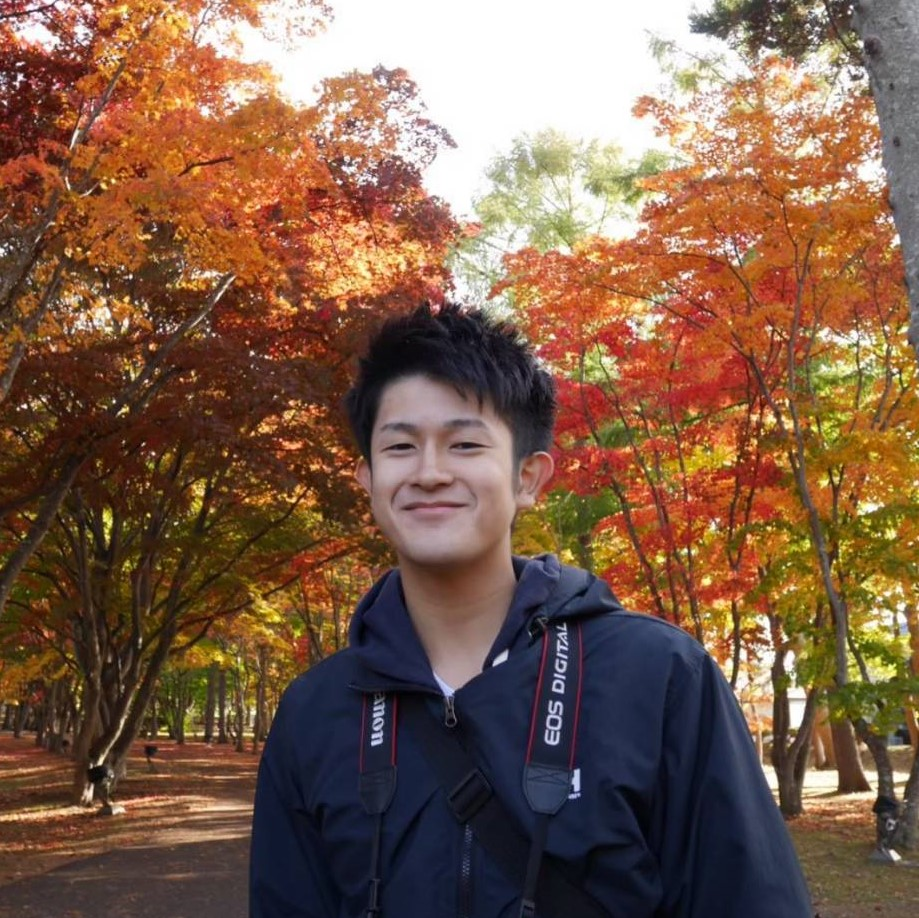

Daimon Koki
～自己紹介サイト～
プロフィール
趣味
車中泊旅行・PCゲーム・バスケットボール・動画鑑賞
資格
- 基本情報技術者試験
- ITパスポート
- （全商）情報処理検定（プログラミング部門・ビジネス情報部門） ともに１級
- （全商）簿記検定 １級
- 実用英語検定 2級
- 普通自動車免許
経歴
- 2017年3月 札幌国際情報高校情報 システム科 卒業
- 2017年4月 北海学園大学 経営学部経営情報学科 入学
- 2020年4月 1部(昼)→2部(夜間)へ、経営情報学科→経営学科へ転部
- 2020年9月 オーストラリア留学の為に1年間休学。コロナの影響で断念し、就職活動へ
- 2022年3月 北海学園大学 経営学科 卒業予定
就活の軸
- 札幌近郊勤務
- モノづくりに関われる
- あいまいな成果ではなく数字などの明確な成果が出る仕事
- 効率の良いものを追及する仕事や企業文化
- 専門的なスキルを身に着けられる仕事
IT業界に興味をもった理由
私は、就活を始めるにあたって、まず最初に自分史を制作しました。
その結果、他の人に作ってもらったものを販売するといった営業などの立場ではなく、制作する側の立場のほうが
自分には向いていると感じました。
なので、モノ作りに関われる企業を就活の軸として、企業を探していたのですが、住宅業界であれば設計士の資格を勉強していなければいけなかったり、
製造業の商品開発であれば、理系募集や・総合職採用で商品開発担当になれるか分からない、といったように中々良い企業を見つける事が出来ませんでした。
そんな中、IT業界は文系でも募集しており、なによりほとんどの割合でモノづくりに関われるという所で、
私にとっては非常に魅力的な業界で、興味をもつようになりました。
貴社を志望した理由
私の就活の軸は、いくつかのIT企業に当てはまると思いますが、そんな中でも貴社を志望している理由は、大きく3点あります。
1つ目に、大きすぎない企業であるという点です。
IT企業を見ていく中で、
人が多い企業だと開発担当、営業担当といったように完全に分業されており、開発者が取引先の企業と
あまりコミュニケーションを取らないところが多いと感じました。
私はプログラム開発をできるだけではなく、取引先とどんなプログラムを組んでいくべきかといった、 コミュニケーションもとれる企業の方が自己成長につながると思っているので、 分業されている企業には向いていないと感じました。 そんな中、貴社は少数精鋭というところで 開発だけではなく、取引先に提案したりなど様々な仕事をできる可能性があるというところが魅力的でした。
2つ目に、直接取引にこだわっている点です。私はプログラム開発をできるだけではなく、取引先とどんなプログラムを組んでいくべきかといった、 コミュニケーションもとれる企業の方が自己成長につながると思っているので、 分業されている企業には向いていないと感じました。 そんな中、貴社は少数精鋭というところで 開発だけではなく、取引先に提案したりなど様々な仕事をできる可能性があるというところが魅力的でした。
直接取引をすることで、会社としては収益を出しやすいですし、
エンドユーザーとの関係が近いことで、仕事のスピード感であったり信頼を得やすいなど、様々なメリットが
あると思います。
3つ目に、社員インタビューなどで、ほとんどの方が社員同士のコミュニケーションや、チームワークを
重要視していた点です。私は、小学生の頃からチームスポーツを継続してきており、反対に、個人スポーツは継続してくることが出来ませんでした。
チームスポーツを継続できて、個人スポーツだと継続できなかった1番大きな理由は、辛いときに助けてもらえる、チームメイトが
いるか・いないかの差だと感じました。こうした点から私は、他のIT企業ではあまり触れていないチームワーク・コミュニケーション
という点について、多くの社員の方が触れていた貴社に非常に魅力を感じました。
以上の点から、他のIT企業ではなく貴社を志望させて頂きました。